|
Utiliser le modèle ECECCette page explique la procédure complète d'utilisation d'un modèle simple sur Cormas. Une page decrivant le modèle est disponible. Lancer CormasDans le menu principal de VW, aller dans 'Tools' -> Cormas -> Cormas Français (ou English) 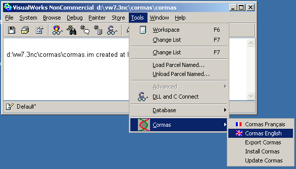 La fenêtre principale de Cormas s'ouvre : 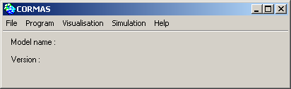 Charger le modèle ECECSélectionner 'Fichier' -> 'Charger...' -> 'Charger depuis une parcel' 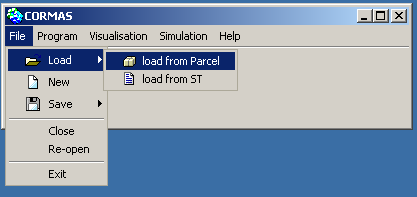 Dans la nouvelle fenêtre, choisir ECEC : 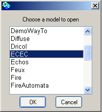 puis sélectionner le fichier ECEC.pcl : 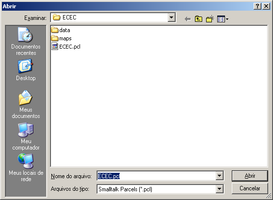 Le modèle se charge alors sur Cormas : 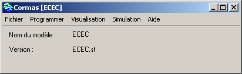 Simuler et observer le modèleCréer un scénarioDans le menu Simulation, sélectionner 'Simulation Interface' : 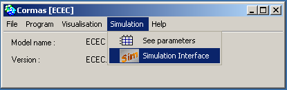 La fenêtre 'Simulation s'ouvre. Inscrire '500' dans la case "Steps" pour lancer une simulation de 500 pas de temps. 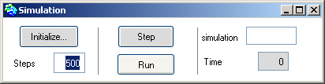 Avant de lancer la simulation, il faut initialiser un scénario.Cliquer sur le bouton 'Initialize', une nouvelle fenêtre s'ouvre permettant de choisir la méthode d'initialisation (ici, la méthode homogeneousEnv") et une méthode de contrôle ("step:"). 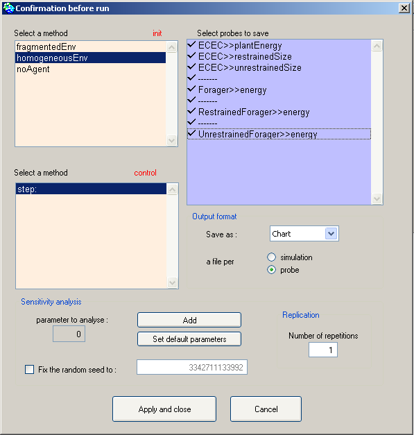 Pour que Cormas enregistre les valeurs des sondes, sélectionner les (pour plusieurs sélections, utiliser le bouton Ctrl ou Majuscule en cliquant avec la souris). Observer la grille spatialePour ouvrir une grille spatiale, sélectionner le menu 'Visualisation' -> 'Space' : 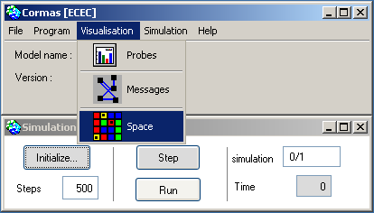 La grille spatiale s'ouvre : Aucun point de vue n'est normalement afficher. Pour afficher le point de vue "niveau d'énergie" des cellules, cliquer avec le bouton droit sur la grille et sélectionner 'Plant' -> 'povFood' 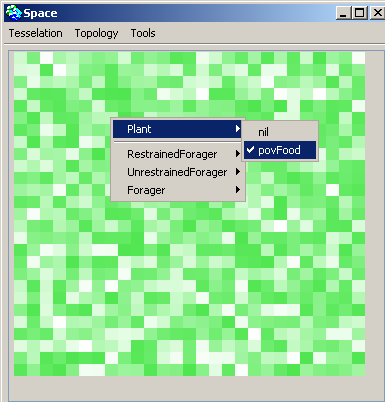 Pour afficher les agents, cliquer avec le bouton droit et sélectionner 'Forager' -> 'pov' : 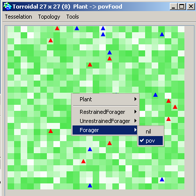 Pour observer les sondes, sélectionner 'Visualisation' -> 'Probes' dans la fenêtre principale de Cormas. 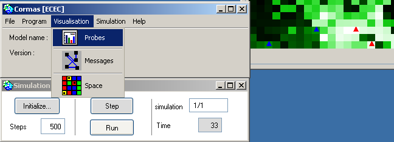 Une nouvelle fenêtre s'ouvre. Vous pouvez voir les sondes globales : 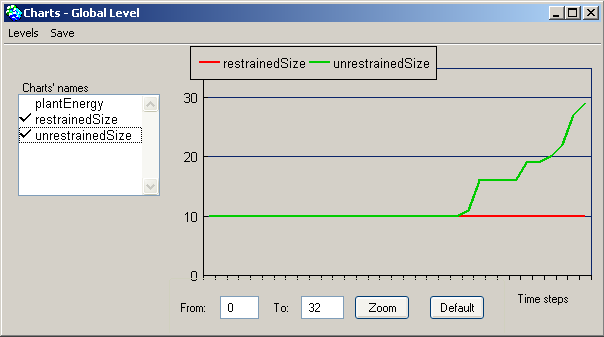 Pour observer les sondes individuelles, il y a deux possibilités :
Tester vos modélesNous vous invitons à essayer les didactitiels Vous pouvez aussi tester d'autres modèles comme TSE, PlotsRental, JLB ou Conway. Forum CormasNous vous invitons également à rejoindre la liste Cormas@cirad.fr.
|